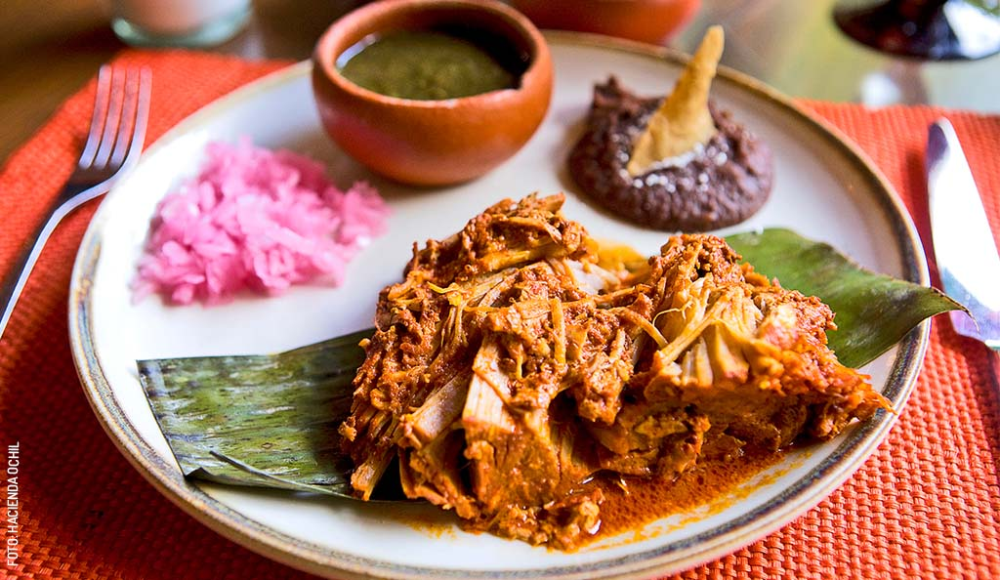
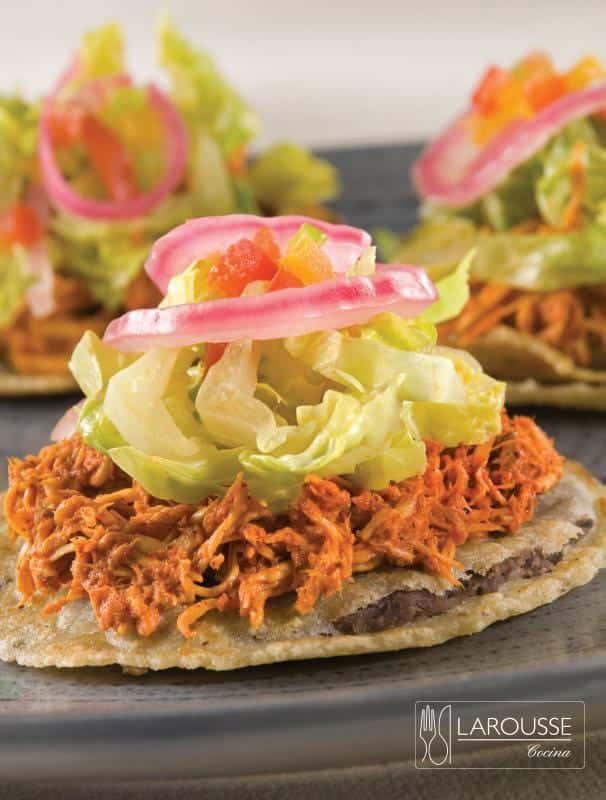
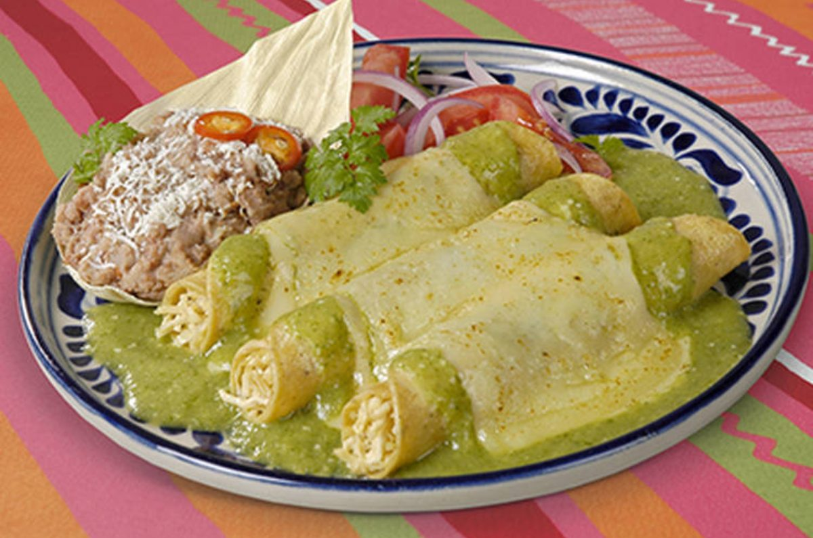
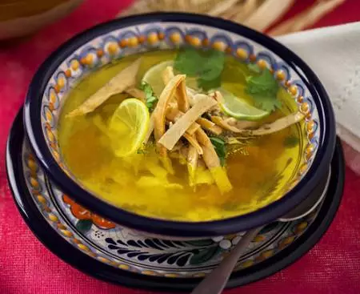
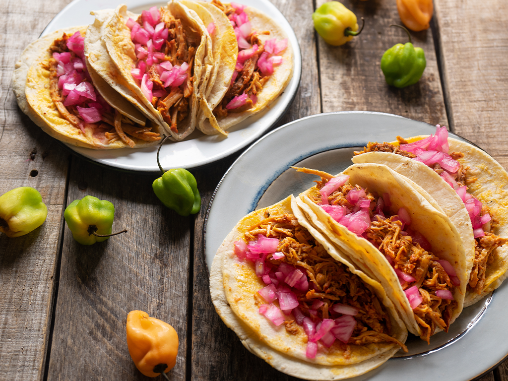

"La cocina yucateca conserva la herencia de la cultura maya y es una de las más reconocidas de México por sus sabores únicos."

La gastronomía yucateca es una de las más representativas de México, ya que combina ingredientes de origen maya con técnicas españolas. Se caracteriza por el uso del achiote, la naranja agria, el maíz, el chile habanero y diversas especias que le dan un sabor único. Sus platillos tradicionales forman parte de la identidad cultural del estado de Yucatán y son reconocidos por su gran sabor y su preparación artesanal.
A continuación se presentan algunos de los alimentos más representativos del estado de Yucatán y sus principales ingredientes.
| Nombre | Imagen | Ingredientes |
|---|---|---|
| Cochinita Pibil |
 |
Carne de cerdo, achiote, naranja agria, ajo, cebolla morada y hoja de plátano. |
| Panuchos |
 |
Tortillas rellenas de frijoles, pollo, lechuga, tomate, cebolla morada y aguacate. |
| Papadzules |
 |
Tortillas de maíz, huevo cocido, salsa de pepita de calabaza y tomate. |
| Sopa de Lima |
 |
Caldo de pollo, lima yucateca, pollo deshebrado y tiras de tortilla frita. |
| Marquesitas |
|
Harina, mantequilla, azúcar, queso de bola y chocolate o cajeta. |
¿Sabías que...?
La cochinita pibil recibe su nombre porque originalmente se cocinaba
en un horno subterráneo llamado pib, una técnica heredada de los
antiguos mayas que permite que la carne quede muy suave y llena de sabor.
"Yucatán, donde la tradición maya se disfruta en cada platillo."